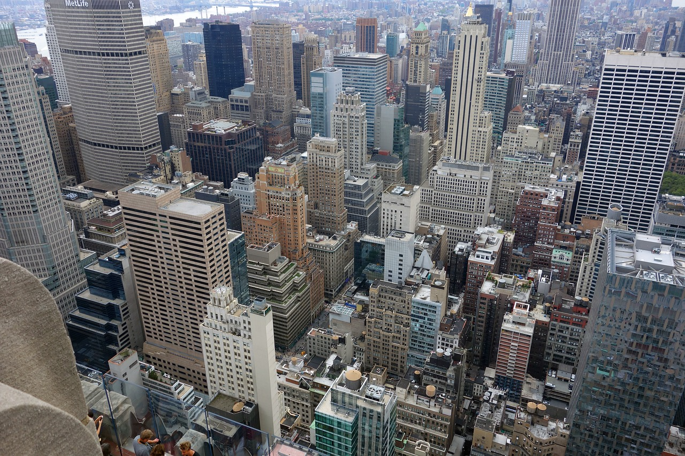

Hi! Welcome to my website talking about New York and overall general information of recommendations of what to do. You may be wondering what there is to do in New York City and this website will talk about recommendations of what to do as I hope it can help you plan and make a visit to New York City. Where and what is New York? New York City is located around in the northeastern part of the United States. New York is a very popular tourist site as I hope you will be able to learn about New York and what is around there. There are many places to explore and visit here as it can bring excitement to your exploration of the city. It is known to be the city that does not sleep as many people enjoy the thrill of the life of the city.
Through every season, there are many different places to visit as they are unique through their different places and excitment it can bring to ones thrilling experience. New York is alive with many different activities, museums, and attractions that make up to what New York City is. New York is full of skyscrapers and monuments while enabling a flourishing experience. The city itself is alive all day as there can be activities done whether it be outdoor or indoor as well as many different options to do based on budget. New York City is the perfect city to visit and find what you want to do while exploring the city life.